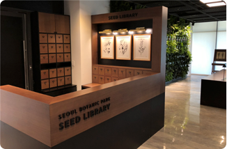
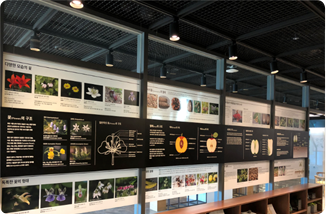
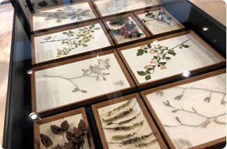
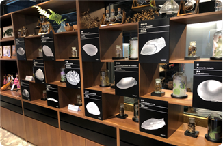
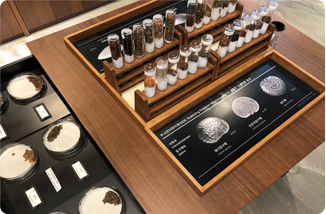
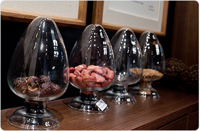

내부시설






위치: 식물문화센터 1층
이용시간: 화요일~일요일 10:00~17:00
씨앗대출: 화요일~일요일(법정공휴일은 제외)
주의사항씨앗도서관은 전시공간으로 음료 및 음식물은 반입금지
도서관 관리 및 안전을 위해 영유아는 반드시 보호자와 동반입실
안내데스크에 비치된 씨앗 대출 대장 작성 후, 씨앗 대출 가능함
대출 씨앗은 1인 1개(종)의 씨앗봉투(약 1g, 씨앗 3~10립)가 제공됨
씨앗 반납은 의무사항이 아님
추가적인 씨앗 대출을 위해 번식, 채종, 고사 등 기록(사진)이 필요함
반납 실적에 따라 향후 대출씨앗 종류와 수량이 변동됨
씨앗 반납은 의무사항이 아님
대출씨앗으로 반납이 불가능한 경우 다른 종류의 씨앗으로 반납 가능
연중 시민들의 씨앗을 기증받음
기증된 씨앗은 대출프로그램을 통해 시민들에게 다시 대출됨
씨앗 기증은 씨앗도서관 직원에게 문의 바람